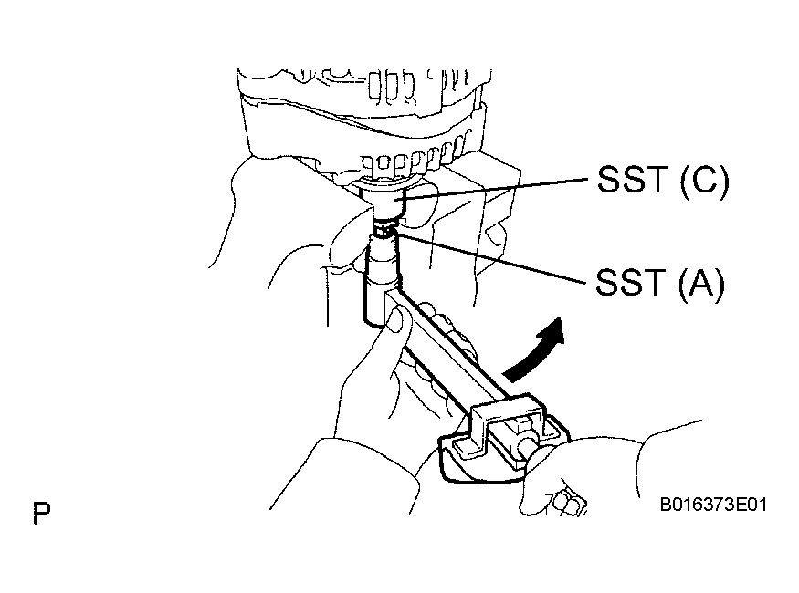
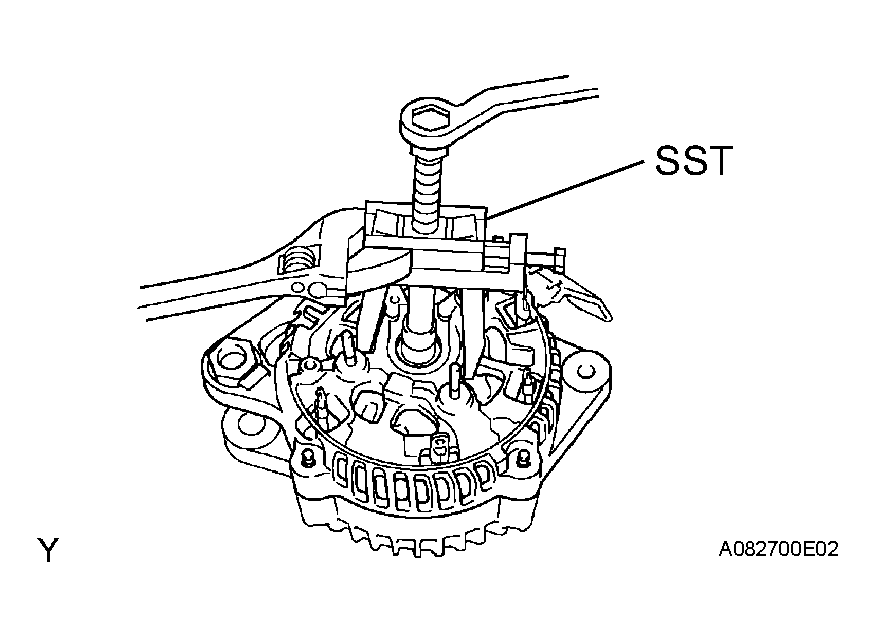

Charging (1NZ-FE): Generator: Disassembly
- REMOVE GENERATOR PULLEY
- Hold SST (A) with a torque wrench, and tighten SST (B) clockwise to the specified torque.
SST 09820-63010 (09820-06010, 09820-06020)
Torque: 39 N*m (400 kgf*cm, 29 ft.*lbf)
NOTE: Check that SST is secured to the rotor shaft. - Mount SST (C) in a vise.
- Insert SST (B) into SST (C), and attach the pulley nut to SST (C).
- To loosen the pulley nut, turn SST (A) in the direction shown in the illustration.

Courtesy of © TOYOTA, LICENSE AGREEMENT TMS1002NOTE: To prevent damage to the rotor shaft, do not loosen the pulley nut more than one-half of a turn. - Remove the generator from SST (C).
- Turn SST (B), and remove SST (A and B).
- Remove the pulley nut and pulley.
- Hold SST (A) with a torque wrench, and tighten SST (B) clockwise to the specified torque.
- REMOVE REAR END COVER
- Remove the nut and terminal insulator.
- Remove the bolt, 3 nuts, plate terminal and end cover.
- REMOVE GENERATOR BRUSH HOLDER ASSEMBLY
- Remove the brush holder cover from the brush holder.
- Remove the 2 screws and brush holder.
- REMOVE GENERATOR REGULATOR ASSEMBLY
- Remove the 3 screws and generator regulator.
- REMOVE GENERATOR HOLDER WITH RECTIFIER
- Remove the 4 screws and holder with rectifier.
- REMOVE GENERATOR RECTIFIER END FRAME
- Remove the 4 rubber insulators.
- Remove the seal plate.
- Remove the 4 nuts and cord clip.
- Using SST, remove the rectifier end frame.

Courtesy of © TOYOTA, LICENSE AGREEMENT TMS1002SST 09286-46011
- REMOVE GENERATOR ROTOR ASSEMBLY
- Remove the generator washer from the rotor.
- Remove the rotor from the drive end frame.NOTE: Do not drop the rotor.